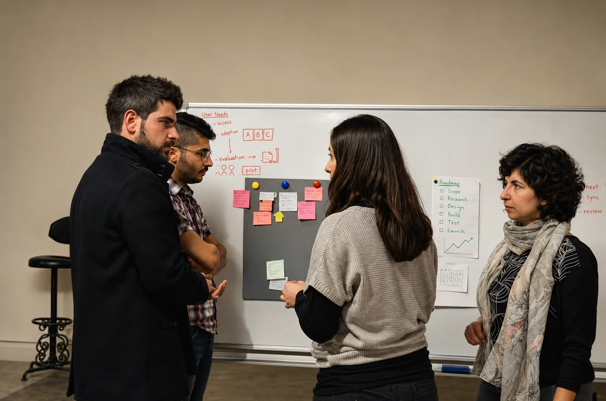
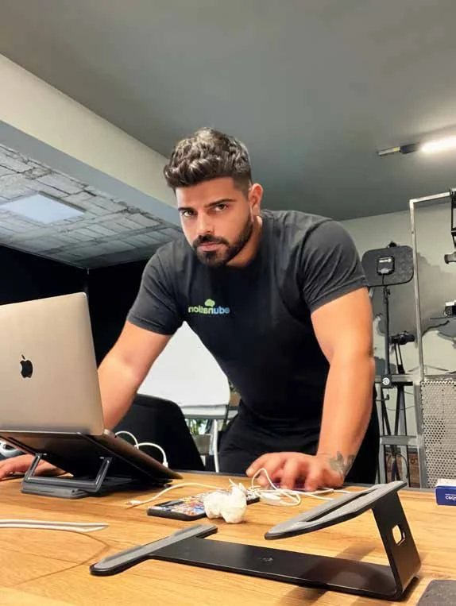

AttentionTrustRetentionPositive reviewsPost engagementHoarding your productsCommunityLoyal customersRaving fansTalentWord of mouthRepeat businessOpportunityPartnershipGrowthImpact
Every engagement: you get a strategy, which includes the research, an audit and a business and market analysis; a one-on-one discovery session and a strategy session with me; and a final strategy deliverable with guidelines.
Scoped separately: brand guidelines with a full identity guide, content strategy, community management, social media management and paid ads.
Not sure which one you are? That’s what the first conversation is for.
10×Instagram engagement for Edunation, in its founder’s words
Heard it from them
Vanessa EmondFounder, Conscious Apparel Co
“I hired Mo to market my conscious clothing brand, but little did I know the magnitude of the transformation to come. Mo took my existing logo and turned it into a full-fledged brand that is highly aesthetic, strategic, and relevant. […] Mo is an expert at visuals, brand messaging, and community building, leading to more sales through Instagram.”
Bob GhandourOwner, Agora & business consultant
“Mo actively helped us build a strong brand and community, which resulted in spiked sales even through the constant wars. Despite the situation we were able to open multiple branches, and once everything was gone, our brand moved out of South Lebanon and we found that our entire community followed us there. Moral of the story: if you’re looking to build a brand that people will love and follow, Mo is your guy.”
Hanine ZaiterOwner, Ifran
“I met Mo when he was an account manager at an agency. I felt he was the only one who understood how I think and my vision for Ifran. He directed the rebrand, helped us launch in Kuwait, and provided effective strategies that helped the brand go viral, especially with our newest branch in Downtown Beirut. I highly recommend working with Mo to take your brand to the next level!”
Alain SamahaFounder, PBF & DRIPD
“It was a pleasure working with Mo during the branding and launch of PBF. He understood the core branding principles we wanted and helped us communicate the message to the public and position our brand to its current status. Clean work, diligent understanding and a very genuine leader overall. Highly recommended!”
Firas JabbourFounder, Edunation LTD
“When recruiting Mo to revisit our company’s brand strategy and marketing, I was skeptical. After moving forward, Mo proved to be a highly skilled and versatile professional, who understood our brand’s needs and was highly qualified to position it accordingly. As a result we adopted a more relevant and strategic brand, and our engagement, especially on Instagram, grew tenfold.”
May FarhatFounder, Beiruti Saj
“Mo displayed exceptional service from the first day we worked with him. He went out of his way to understand the location of our restaurant opening in Salzburg and created a beautiful window display and brand identity. He took the time to understand every detail of the menu and adapted it to different languages with ease.”
“One of the best! Highly creative and multi-talented. The level of expertise and professionalism in the services he offered us is exceptional. Mo displayed a keen understanding of the Abu Dhabi market and delivered a great brand strategy. Versatile, he was able to extend our brand in many ways that helped us reach our goals.”
Dina MuradCo-founder, DigiCrowns LLC
“Mo was a straight-A student at the Lebanese American University, and since then I have watched him grow into a poised and accomplished man. He is an exceptional creative, with an excellent scope of creativity and work habits.”
0108
The method
How we’ll work.
01
Discovery
We start with a 30-minute conversation. You tell me what you’re building; I ask the uncomfortable questions. No pitch deck needed.
02
Research
I study your numbers, your audience and at least three competitors, then name the one thing that makes you worth choosing.
03
Development
Positioning, identity, voice and every touchpoint, built around that one thing, so people feel it before anyone explains it.
04
Launch
Congrats! Your new strategy is ready to collect momentum and launch.

18 years, 18 lawsThe rules I work by
The Teamwork Law. Work with your team as one unit.
The Fiduciary Law. Act in your interest, and aim for the best possible outcome.
The Competitor Law. Audit at least three of your competitors.
The Nerd Law. Study your numbers, and how they move, every day.
The Deadline Law. Meet every deadline, so you always show up prepared.
The Hoarder Law. Keep content in reserve, so marketing never stalls.
The Superman Law. Be there when there’s an emergency or a crisis.
The Receptionist Law. Never leave a customer question or review waiting.
The Incarnation Law. Speak to every prospect and customer in your brand’s voice.
The Maximizer Law. Spend 30 minutes engaging around every post.
The Opportunist Law. Launch on-the-spot campaigns when opportunity knocks.
The System Law. Keep files and assets organised, for a marketing system that runs.
The Wise Guy Law. Spend time each morning on your niche and its trends.
The Network Law. Build relationships with influencers every day.
The Milker Law. Use every feature a platform offers.
The Thinker Law. Connect the dots on which posts perform, and why.
The Storyteller Law. Tell the brand’s story in a way people relate to.
The Zen Law. Work with heart, and be grateful for everything around you.

About
Hi, I’m Mo.
Mohamad Abou Younes, if we’re being formal. A brand strategist and creative director based in Beirut, and marketing manager at Second 2 None Group.
I graduated in 2014 with degrees in graphic design and advertising from the Lebanese American University. My love for branding and marketing led me on to a Brand Management certification from London Business School. In parallel, I trained myself in marketing through programs such as B-School by Marie Forleo, Digital Course Academy by Amy Porterfield, Full Time Purpose by Victor Oddo & Aaron Doughty, and much more.
For almost two decades I’ve named, built and launched brands for restaurants, cafés, retailers and service businesses in Lebanon, Saudi Arabia, the UAE, Kuwait, Jordan, Austria, Norway and the US. I’ve hired agencies, and founded them. I know what it costs when a brand gets it wrong, because I’ve paid for it on both sides of the table.
I’m not a magician. I’ve just made most of the mistakes already, and studied what works when building a brand, so you won’t have to.
Based inBeirut, Lebanon
StudiedGraphic design & advertising, LAU
Continuing educationBrand Management, London Business School
Working acrossLebanon, the Gulf, Europe and the US